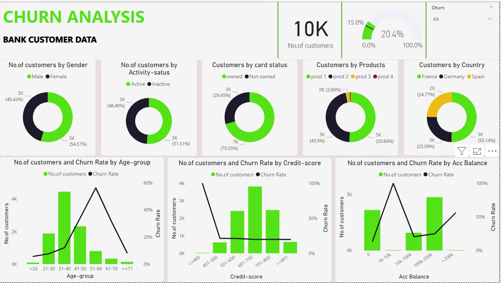
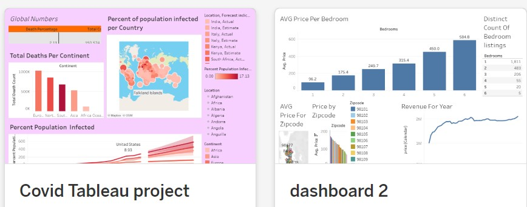

Data Analysis in Sql Server
Project Overview:
This project involves analyzing COVID-19 data using SQL to derive meaningful insights. The data is sourced from two tables: CovidDeaths and CovidVaccinations. The primary goal is to analyze the trends and impacts of COVID-19 infections, deaths, and vaccinations across different locations and continents.
This project showcases the use of SQL to perform complex data analysis on COVID-19 datasets, highlighting key metrics such as infection rates, death percentages, and vaccination progress. The queries demonstrate various SQL techniques including joins, aggregations, window functions, CTEs, and temporary tables to derive insights and create comprehensive reports.
Datacleaning in MySql Workbench
Project Summary: Data Cleaning of Layoffs Dataset Using SQL
This project focuses on cleaning and standardizing a dataset related to global layoffs. The dataset is stored in a SQL database, and the cleaning process involves removing duplicates, standardizing data formats, handling null values, and removing unnecessary columns and rows. Below are the detailed steps and SQL queries used in this project.
The project successfully cleaned the layoffs dataset by performing the following steps:
Removed Duplicates: Ensured there were no duplicate records in the dataset.
Standardized Data: Trimmed white spaces, standardized industry names, and formatted date fields.
Handled Null Values: Updated or deleted records with null values in critical fields.
Removed Unnecessary Columns: Dropped temporary columns used during the cleaning process.
This thorough cleaning process ensures that the dataset is ready for analysis, providing accurate and standardized data for further insights.
Data Exploration in MySQL
Project Summary: Analyzing Layoffs Data Using SQL
This project involves analyzing a dataset of global layoffs stored in a SQL database. The analysis focuses on understanding the patterns and trends in layoffs by querying various aspects of the data, such as total layoffs, percentage laid off, and the impact on different companies and industries.
The analysis provided valuable insights into the layoffs data, including:1.Maximum Layoffs and Percentage Laid Off: Identified the maximum number of layoffs and the highest percentage of layoffs.
2.Companies with 100% Layoffs: Found companies where the entire workforce was laid off, with further sorting by funds raised.
3.Total Layoffs by Company: Highlighted companies with the highest total layoffs.
4.Date Range and Yearly Analysis: Showed the date range of layoffs and the total layoffs by year.
5.Industry Stage Analysis: Analyzed the total layoffs by the stage of the industry.
6.Average Percentage Laid Off by Company: Determined the average percentage of layoffs per company.
7.Rolling Total of Monthly Layoffs: Provided a cumulative total of layoffs month by month.
8.Yearly Company Analysis: Identified the top companies with the highest layoffs each year.
9.These insights can help stakeholders understand the impact of layoffs across different sectors, time periods, and geographical locations, enabling better decision-making and policy formulation.
CryptoCurrencyAPISETUP-Automation-and-Data-Analysis
Data Fetching: Successfully automated the process of fetching and updating cryptocurrency data.
Data Transformation: Aggregated and reshaped data to analyze percentage changes over multiple periods.
Visualization: Utilized Seaborn and Plotly for insightful visualizations, revealing trends and changes in the cryptocurrency market.

R-Projects

PowerBI dashboards
One of the projects is Built an interactive dashboard of Churn analysis of a bank customer dataset.This churn analysis has provided valuable insights into the factors driving customer attrition in the bank. By addressing the identified issues and implementing targeted strategies, the bank can enhance customer retention and foster long-term loyalty.

Machine Learning Projects|Building Predictive models
Projects on Linear Regression(House Value Prediction), Logistic Regression(RainFall Prediction)
Data Extraction Using BeautifulSoup in Python
This project demonstrates a complete workflow for automating the extraction of product data from an Amazon webpage, appending it to a CSV file, and sending an email alert when the price drops below a specified value. The steps involved cover:
Web Scraping: Using BeautifulSoup and Requests to extract data.
Data Handling: Using CSV and Pandas for data storage and manipulation.
Automation: Setting up periodic checks using a while loop and time.sleep().
Notification: Sending email alerts using the smtplib library.
By following these steps, you can create a robust system for monitoring product prices and receiving timely alerts.

Built interactive dashboards using Tableau
Includes Various projects like the Covid Analysis done on SQL.
COVID-19 Tableau Project Summary
Project Objective:
The objective of this project was to analyze and visualize global COVID-19 data using Tableau, focusing on key metrics such as infection rates, death counts, and vaccination progress. The insights derived from this analysis aim to provide a comprehensive understanding of the pandemic's impact across different regions and countries.
Data Sources:
The project utilized two primary datasets:
CovidDeaths: This dataset includes information on total cases, new cases, total deaths, new deaths, population, and other related metrics.
CovidVaccinations: This dataset contains data on new vaccinations administered per location and date.
Key Analyses and Visualizations:
Global Summary of COVID-19 Impact:
Total Cases and Deaths: Summarized total COVID-19 cases and deaths across all continents, highlighting the global impact of the pandemic.
Death Percentage: Calculated the death percentage to understand the severity and fatality rate of the virus in different regions.
Country-Specific Death Analysis:
Death Counts by Location: Identified countries with the highest death counts where the continent is null, excluding global aggregates such as 'World,' 'European Union,' and 'International.'
Highest Death Count by Country: Focused on individual countries to rank them by total death counts.
Infection Rate Analysis:
Percent Population Infected: Calculated and visualized the percentage of the population infected in each country, providing insights into the spread and concentration of COVID-19.
Date-Specific Infection Rates:
Highest Infection Count by Date: Analyzed the highest number of total cases on specific dates, offering a temporal perspective on the pandemic's peak periods.
Infection Rates Over Time: Monitored changes in infection rates over time to identify trends and patterns.
Vaccination Progress:
Vaccination Rollout: Tracked the number of new vaccinations administered daily and cumulatively in each country.
Population Vaccination Percentage: Calculated the percentage of the population vaccinated in each country, helping to gauge progress towards herd immunity.
Comparison of Infections and Vaccinations:
Populations vs. Vaccinations: Compared infection rates and vaccination progress to understand the relationship between vaccination efforts and infection control.
Visualizations:
The Tableau dashboard includes a variety of visualizations such as:
Bar charts for total cases and deaths by country.
Line charts showing trends in infection and death rates over time.
Heat maps indicating the severity of COVID-19's impact across different regions.
Pie charts and gauges to represent vaccination progress as a percentage of the population.
Conclusion:
This Tableau project provided a detailed and interactive analysis of COVID-19 data, offering valuable insights into the pandemic's impact on different regions and the effectiveness of vaccination efforts. By visualizing key metrics, stakeholders can make informed decisions and strategies to manage and mitigate the effects of the pandemic.